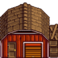
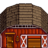
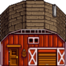
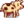
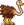

Establo
| Establo | Establo grande | Establo de lujo | |
|  |  |  | |
| Información | |||
| Mejora desde | - | Establo | Establo grande |
| Coste del edificio | |||
| Materiales | |||
| Capacidad | 4 | 8 | 12 |
| Animales |  Vaca Avestruz | Vaca |
Vaca |
| Espacio | 7x4
|
7x4
|
7x4
|
| Dispone de |
|
|
|
El Establo es un tipo de construcción que se puede comprar y mejorar a partir de Robin en la Carpintería. Se tarda tres días en construirlo y dos en mejorarlo.
El establo alberga Vacas, Cabras, Ovejas, Cerdos y Avestruces. Una vez que hayas desbloqueado un animal construyendo el establo necesario para albergarlo, ese animal puede colocarse también en cualquier otro establo no mejorado que hayas construido.
El coste total de un establo de lujo, construido desde cero, es de  43 000o,
43 000o,  Madera (1350) y
Madera (1350) y  Piedra (650) (O, si toda la madera y la piedra se compran a Robin durante el año 1,
Piedra (650) (O, si toda la madera y la piedra se compran a Robin durante el año 1,  69 500o, y
69 500o, y  175 500o a partir del año 2)
175 500o a partir del año 2)
Los animales del establo pueden quedar atrapados fuera por la noche si las puertas del establo están cerradas. Las condiciones para ello no están claras (véase Animales atrapados afuera). Si un animal queda atrapado fuera del establo por la noche, al día siguiente su estado de ánimo estará en "mal humor". Los animales atrapados fuera también están sujetos a Ataque de animales salvajes.

Imágenes del interior:

Interior del Establo

Interior del Establo grande

Interior del Establo de lujo